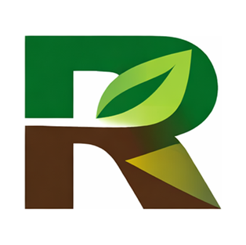
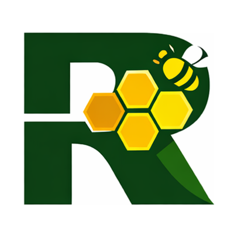

ALII – Air & Living Infrastructure Initiative
Advancing nature‑based solutions, air‑quality innovation, and green infrastructure across London.
Learn More Roehampton Sustainable Futures Hub
Roehampton Sustainable Futures Hub
Sustainable Merton was the award-recognised pilot that led directly to the creation of the Roehampton Sustainable Futures Hub. It was developed as a community-centred, place-based initiative to demonstrate how universities can partner with residents, local authorities, SMEs and voluntary organisations to deliver practical sustainability solutions across south-west London.
The pilot combined door-to-door engagement, neighbourhood listening sessions, co-design workshops and applied research. It generated evidence on air quality, green and living infrastructure, energy efficiency, green skills demand, sustainable transport and place-based environmental engagement.
Sustainable Merton received national recognition and was highlighted in the UK Parliament through Early Day Motion 1753. Its success showed how collaborative, evidence-led environmental action can strengthen local capacity, support community innovation and influence wider sustainability policy.
The lessons from Sustainable Merton underpin RSFH’s current work: connecting teaching, research, community engagement and partnership to create practical, locally grounded sustainability impact.
ALII focuses on nature‑based solutions, air quality innovation, and green infrastructure across London. The initiative supports research, training, and community‑led projects that improve environmental resilience and urban wellbeing.
The Kingston Hive is a community‑powered climate hub offering workshops, sustainability education, repair cafés, and local action projects. It empowers residents to build practical green skills and take climate‑positive action.
Our Green Skills projects provide pathways into the growing green economy, from retrofit and energy efficiency to digital and data for net zero. Designed with employers and aligned with London’s climate goals.

Advancing nature‑based solutions, air‑quality innovation, and green infrastructure across London.
Learn More
A community‑powered climate hub offering workshops, repair cafés, and sustainability education.
Learn More
Training programmes supporting London’s transition to a green economy through skills, innovation, and employer partnerships.
Learn More